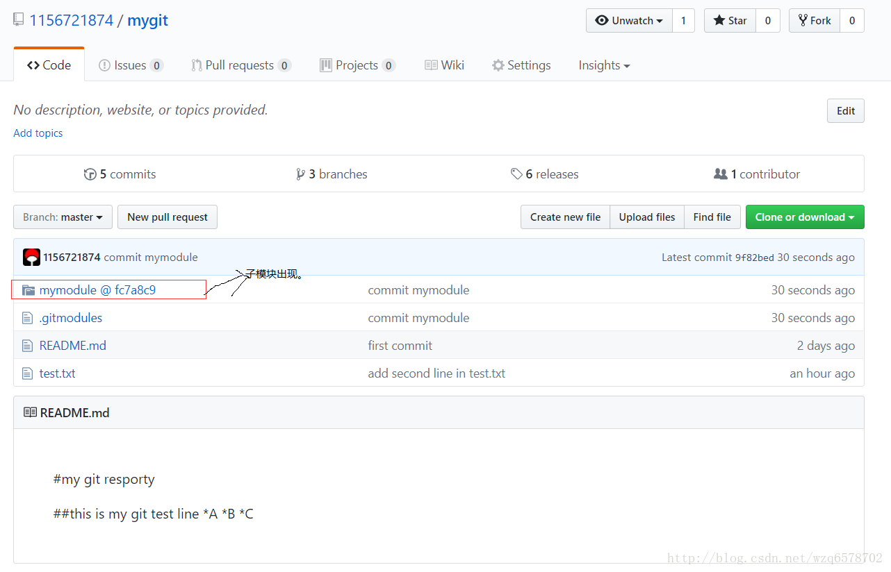

创建裸库：
1 2 3 4 5 6 7 8 9 10 11 12 13 14 15 $ git init --bare Initialized empty Git repository in E:/Study/git_bare/ Administrator@CeaserWang MINGW64 /e/Study/git_bare (BARE:master) $ ll -a total 19 drwxr-xr-x 1 Administrator 197121 0 8月 2 20:52 ./ drwxr-xr-x 1 Administrator 197121 0 8月 2 20:51 ../ -rw-r--r-- 1 Administrator 197121 104 8月 2 20:52 config -rw-r--r-- 1 Administrator 197121 73 8月 2 20:52 description -rw-r--r-- 1 Administrator 197121 23 8月 2 20:52 HEAD drwxr-xr-x 1 Administrator 197121 0 8月 2 20:52 hooks/ drwxr-xr-x 1 Administrator 197121 0 8月 2 20:52 info/ drwxr-xr-x 1 Administrator 197121 0 8月 2 20:52 objects/ drwxr-xr-x 1 Administrator 197121 0 8月 2 20:52 refs/
可以看到裸库没有工作区，直接就是之前非裸库的.git下边的内容。
submodule：
准备2个仓库，即2个项目：
将子仓库纳入到父仓库： https://github.com/1156721874/child.git mymodule
1 2 3 4 5 6 7 $ git submodule add https://github.com/1156721874/child.git mymodule Cloning into 'E:/Study/mygit/mymodule'... remote: Counting objects: 3, done. remote: Total 3 (delta 0), reused 3 (delta 0), pack-reused 0 Unpacking objects: 100% (3/3), done. warning: LF will be replaced by CRLF in .gitmodules. The file will have its original line endings in your working directory.
子模块出现在mygit中：
1 2 3 4 5 6 7 8 9 $ ll -a total 19 drwxr-xr-x 1 Administrator 197121 0 8月 2 21:23 ./ drwxr-xr-x 1 Administrator 197121 0 8月 2 21:12 ../ drwxr-xr-x 1 Administrator 197121 0 8月 2 21:23 .git/ -rw-r--r-- 1 Administrator 197121 87 8月 2 21:23 .gitmodules drwxr-xr-x 1 Administrator 197121 0 8月 2 21:23 mymodule/ -rw-r--r-- 1 Administrator 197121 54 7月 31 20:57 README.md -rw-r--r-- 1 Administrator 197121 44 8月 2 20:04 test.txt
接下来我们在mygit里边将版本库提交到远程，然后在远程可以看到：
1 2 3 4 5 6 7 8 9 10 11 12 13 14 15 16 17 18 19 20 $ git add . warning: LF will be replaced by CRLF in .gitmodules. The file will have its original line endings in your working directory. Administrator@CeaserWang MINGW64 /e/Study/mygit (master) $ git commit -m 'commit mymodule' [master 9f82bed] commit mymodule 2 files changed, 4 insertions(+) create mode 100644 .gitmodules create mode 160000 mymodule Administrator@CeaserWang MINGW64 /e/Study/mygit (master) $ git push Counting objects: 3, done. Delta compression using up to 8 threads. Compressing objects: 100% (3/3), done. Writing objects: 100% (3/3), 415 bytes | 0 bytes/s, done. Total 3 (delta 0), reused 0 (delta 0) To https://github.com/1156721874/mygit.git 8004460..9f82bed master -> master

我们验证下在child下添加一个文件在mygit仓库的mymodule同步出现：
如果我们引用了很多的子模块我们是不是需要进入每一个子模块执行git pull呢？这样做显然是麻烦的，所以git提供了批量的方式：
命令很明显，就是每个仓库执行git pull
这时候如果另外一个开发者加入进来，需要执行clone mygit操作：
我们虽然讲父级模块克隆下来，但是内容是空的，需要使用【 git submodule init】初始化子模块，然后【 git submodule update –recursive
其实我跟在座的读者兜了一个圈子，哈哈，我们完全可以使用一条命令将所有的子模块下载下来：
1 git submodule add https://github.com/1156721874/child.git mymodule --recursive
克隆的时候加上参数 –recursive即可。
此时在父级模块mygit里边的.git目录下出现modules文件件，进入modules是一个完整的仓库的配合格局：
mymodule的删除，git没有提供直接的命令删除submodule，但是我们可以使用一系列命令组合完成删除：
远程仓库的当然也会删除掉：
最后说一下这种submodule的项目管理方式和jar嵌入的方式的不同点就是，jar包的形式是子模块很少发生代码的变化，而submodule的方式是用在依赖的子模块变动非常大的情况。